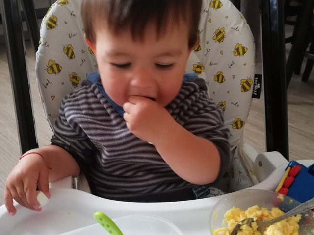
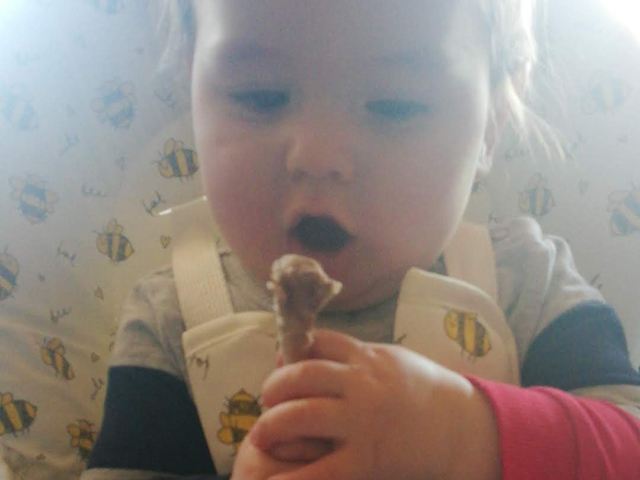

Захранването на Боян
Когато бях на 14 години баща ми беше толкова невеж, че едва го понасях. Но когато станах на 21, се учудих колко много е научил за 7 години.
Марк Твен
Всичко се свежда до храненето
Кърма
Всичко се свежда до храненето, както на майката така и на бебето. При наличието на кърма тя винаги е по-правилният избор от адаптираното мляко. Чрез кърмата майката форматира имунната система на бебето, предавайки му собствените си имуноглобулини, чиято роля е да се залепят за лигавиците на бебето, предпазвайки го от инфекции. Разбира се, не всички антителa преминават от майката към бебето. Майката предава антитела срещу многo от болестите, от които тя самата е боледувала. Освен антитела кърмата съдържа лизозим и лактоферин, два антибактериални ензима, предпазващи бебето от причинители на инфекции като е-коли и стафилококи. Кърмата съдържа в себе си още и бели кръвни клетки голяма част, от които са фагоцити, наречени така заради способността им да поглъщат вируси и бактерии. Всички тези имунни фактори от антитела и протеини са устойчиви на протеолиза (разграждане на протеини) в червата на бебето.
Повечето бактериални инфекции се причиняват от организми, които вече колонизират гостоприемника, обикновено в стомашно-чревния или дихателния тракт. Човешкото мляко може да предотврати растежа на тези бактерии. Има няколко начина, по които кърмата предпазва децата от инфекция. Тя съдържа антитела (имуноглобулини), които могат да помогнат за предотвратяване на заболяванията при бебето и е с високо съдържание на имуноглобулин А (IgA), който се свързва с вируси и бактерии, особено с тези, които влизат през червата и други слузни мембрани. Това е особено защитно за бебета, които винаги слагат неща в устата си. Има поне две причини, поради които кърменето продължава да носи ползи за по-големите деца. Първо, човешкото мляко съдържа имунни фактори, независимо от продължителността на лактацията и второ - нивата на лизозим и SIgA са открити в кърмата през целия период на изследване на лактацията, включително втората година.
Твърда храна, протеини, желязо
Бебето произвежда няколко ензими като пепсин, протоелитни ензими, солна киселина, служещи за усвояване на мазнини и протени, тъй като майчиното мляко се състои предимно от 50-60% наситени мазнини и протеин. Запасите от желязо започват да се изчерват бързо, когато бебето е било хранено с храна, бедна на желязо или е захранвано с краве мляко, тъй като съдържанието на желязо в кърмата се усвоява по-пълноценно от това в кравето мляко. Чрез кърмата бебето получава холестерол в количество почти 6 пъти повече, отколкото възрастен човек консумира. Въпреки все още недоразвитата си храносмилателна система, бебето може много по-пълноценно да усвои протеини и мазнини от животински източник, отколкото въглехидрати. Ако твърдата храна се включи прекалено рано, има риск от имунен отговор на бебето, заради способността на храносмилателния тракт в тази възраст да пропуска големи хранителни частици, които ако достигнат до кръвния поток могат да предизвикат алергична реакция. Тук ще спомена и за опасността от развиването на Ботулизъм при бебета и малки деца, на които се дава мед. Поради по-ниската киселинност на стомашния сок, около 5pH при бебетата и малките деца (за сравнение при възрастен е около 2pH, като разликата е логаритмична, тоест между 1 и 2pH е 10 пъти), постъпилите с храната спори на причинителя на ботулизма не могат да бъдат унищожени, а се превръщат в живи организми, които отделят силен екзотоксин, причинител на смъртоносното заболяване.
Обичайната възраст за захранване на бебе е шестият месец. Традиция е захранването да стартира с кореноплодни като пащърнак, морков, тиква, картоф, грах и плодове като ябълки, круши, праскови, банан - все въглехидратни храни с високо съдържание на фибри, фруктоза и нишесте. Липсата на преимущественото присъствие на животинска храна (месо, яйца…) доста често може да доведе до ниски нива на желязо, цинк, витамини от група Б. Често пъти в схемата на захранване присъстват и зърнени храни, които не само, че не доставят необходимите хранителни вещества на организма но и го лишават от способността да усвои гореописаните витамини и минерали, заради съдържащите се в тях фитати.Месото е пълноценен източник на желязо, концентрирано в усвоимата за хората форма (heme), която е около 40-45% от общото съдържание на желязо, за разликата от формата му в растителните храни (nonheme). В животинксите храни се съдържат и двете форми на желязо - heme и nonheme, докато в растителните само nonheme. Heme формата се усвоява по-пълноценно, около 20-30% (за сравнение nonheme формата се усвоява между 5-12%), освен в случаите на хемохроматоза (високи нива на желязо), когато усвояването на heme формата може да достигне 80-100%.
От край време педиатрите препоръчват захранване с въглехидратни храни, избягвайки източници, високи на съдържание на наситени мазнини и холестерол. Кърмата е богата и на двете, наситени мазнини и холестерол, които са важни са изграждането на мускулите и костите, като наситените живитински мазнини дават подходяща среда за усвояването на мастноразтвримите витамини А и Д, необходими за усвояването на протеини и минерали. Човешките новородени се раждат с доминиращо съдържание на мазнини. Основната причина за това е бързоразвиващият се още в утробата мозък, чийто състав е около 60% мазнини и изразходва около 70-80% от наличните енергийни запаси. Поради диспропорционалното развитие на мозъка, което продължава почти до 5-тата година от развитието, човешкото новородено не може дори скоро след раждането си да ходи. Двата вида незаменими мастни киселини, на които новороденото разчита, и с които се ражда в ограничени количества са ARA (арахидонова киселина) и DHA (докозахексаеновата киселина). Тези мастни киселини биват набавени в адекватни количества чрез кърмата, но концентрацията им зависи и от храненето на майката. Източник на докозахексаенова киселина са рибата и морските дарове, а на арахидонова киселина - месото, най-вече говеждо, домашни птици и яйца. Често пъти като източник на омега 3 мастни киселини се препоръчват различни видове ядки и семена, които обаче съдържат форма, неусвоима от тялото и превръщането и в такава предимно в черния дроб може да набави, в най-добрия случай, едва около 0.5% от общото количество. DHA играе важна роля за функцията на невротрансмитерите и развитието на когнитивните умения. Всъщност без DHA не бихте могли дори да развиете мозък на първо място.
-

- 
-

- 
Захранване
Пети месец
Съвсем в началото на 5-тия месец преди обедното му хранене, в продължение на 4 дни ядеше по една лъжичка (количество, което се побира в чаена лъжица) от рохък, почти суров жълтък. Яйцата, които му се даваха бяха от пасищни кокошки, при които отсъства дохранването с царевица. След 4-тия ден изяждаше по половин жълтък с няколко зрънца хималайска сол. Нямаше никакви странични реакции и му хареса. През тези 4 дни заедно с жълтъка опита костен бульон (от телешки кости без добавени зеленчуци при варенето), по една лъжичка след жълтъка. След изтичането и на тези „пробни” дни, жъктъкът стана цял, а количеството костен бульон се увеличи на 5- 6 лъжици, в зависимост от желанието на Боян. В края на 5-ти месец към жълтъка добавихме краве масло (половин кафена лъжичка). Никак не му хареса комбинацията. „Отдъхна” си няколко дни, през които беше само на кърма. След тях си чакаше с нетърпение обедната гощавка от жълтък със сол, масло и бульон. Яйцето е най- питателната храна, затова и запознаването на Боян с твърдите храни започна именно с него. В жълтъка се съдържат всички нужни хранителни вещества за създаването на нов организъм, съответно предоставяме всичко, необходимо за развитието на детския организъм. С белтъка изчакахме известно време, защото при по-лека термична обработка пептидните връзки не се разпадат до ниво, лесно за усвояване от недоразвитата храносмилателна система на бебе.
Изберете изображение, за да стартира видео презентацията


Шести месец
В началото на този месец дойде ред на черния дроб- следващата „супер храна”. Отново се заложи на телешки продукт от пасищно животно. Сварен, овкусен с хималайска сол и пасиран с масло. Първите 4 дни отново получаваше по една лъжица. Въпреки маслото, му дойде сухо и добавихме бульон. Интересна комбинация се получи от дроб и жълтък, в следващите 4 дни трудно си изяждаше порцията от 2 лъжички дроб и цял сварен, рохък жълтък. И понеже не стана и по този начин, сварихме тиква, пасирахме я и я добавихме към дроба. Невкусна комбинация от 2 лъжици дроб с 1 лъжица тиква. Опитът с дроба не беше успешен. На по-късен етап открихме правилния вид дроб, правилното приготвяне и желанието от страна на Боян да си похапва. След неуспешния опит с черния дроб, въведохме нова храна – пилешко месо (месо от домашно петле). Сварено, пасирано, овкусено с хималайска сол. Първият опит се състоеше от една лъжица, но не се хареса особено, заради консистенцията. Добавихме масло и бульона, в който се беше варило месото. Без проблем изяждаше порцията си (с всеки следващ ден увеличавах лъжиците, докато не стигнах до една супена лъжица). Комбинирахме с тиква (една лъжичка). Жълтъкът си присъства в менюто всеки ден, независимо от въвеждането на нови храни или увеличаването на количестово им. В този месец дадохме да опита кефир – една лъжица, хареса му се. Но поради незрялата все още храносмилателна система, не увеличих количеството, за да не предизвикам раздразнения. Белтъците в кравето мляко се усвояват трудно от стомаха, което може да довете до неразположение на бебето.
Седми месец
В този месец „експериментите” бяха повече. Опитахме се да въведем червена чушка (домашно маринована, без добена мазнина), но опитите ни бяха катастрофални, въпреки, че Боян намери новата си любима храна – пилешко с червена чушка. От нея се запече и след 3-тия ден спряхме да я даваме. Дойде ред на телешкото месо (домашно месо от теле, пасло на високо в планината). Варено, овкусено със сол, пасирано с костен бульон (250 гр месо, 40 гр масло, 250 мл костен бульон). Хареса му се много, но пак му дойде сухо. Първите 4 дни му давахме съответно по 1, 2, 3 и 4 лъжички. На 5-тия ден тиквичка (сварена, овкусена със сол и масло). В първия ден от новата комбинация месото към тиквичката беше в равно съотношение 1 лъжица :1 лъжица. През втория 2 супени лъжици месо : 2 супени лъжици тиквичка (такова беше и количеството на месото към зеленчука до края на месеца). Жълтъкът изместихме към следобедната закуска. Нямаше никакъв проблем с тази комбинация. Към края на месеца се опитахме да му дадем банан. Започнахме с една лъжичка, но този плод не беше удостоен с внимание. На третия ден изяде 2 лъжички, количество, което повърна след около 15 минути. Спряхме банана. Въпреки увеличаващото се количество твърда храна за обяд и следобедна закуска, Боян продължи да си хапва и кърма.
Изберете изображение, за да стартира видео презентацията


Осми месец
Този месец се оказа успешен – успяхме да заменим обедното хранене изцяло с твърда храна (телешко с тиквичка) и Боян беше много щастлив. Количеството, което му давах беше – 50 гр месо, 70 гр тиквичка, масло и костен бульон на око (докато консистенцията ми се стори подходяща). За следобедна закуска решихме да пробваме с варена тиква с масло – неуспепен опит. Само една лъжичка първия ден и пълен отказ в следващите 3 дни. Атакувахме закуската – два жълтъка с масло, костен бульон и сол. Изяждаше си всичко, но нуждата от дохранването с кърма си остана. Сварихме морков и го пасирахме с много масло – тотален отказ, нито една лъжичка през следващите 4 дни. Сменихме тактиката – сварена тиква с банан. 2 супени лъжици банан с 2 супени лъжици тиква. Хареса му комбинацията, но не увеличихме количеството, за да не предизвикаме реакция на храносмилателната система.
Изберете изображение, за да стартира видео презентацията


Девети месец
В този месец нововъведените храни не бяха много. Закуската си остана същата (жълтъци с масло и костен бульон) плюс кърма. Обедите - телешко с тиквичка. Следобедната закуска се промени, понеже бананът запече положението. Дадохме му пасиран пъпеш и с охота изяждаше поднесеното му количество (5-6 лъжици), като си дояждаше с кърма.
Изберете изображение, за да стартира видео презентацията


Десети месец
През 10-тия месец започнаха да му избиват зъбки, давахме твърди плодове и зеленчуци (ябълка, краставица, морков), за да облекчават раздразнението. Освен тях опита и кайсии (само пасирани, без термична обработка), вкусът им допадна на Боян и не му се отразиха отрицателно на храносмилателната система, следобедните му закуски се състояха главно от 2 зрели плодчета в продължение на няколко дни. Крем – карамелът беше гвоздеят на програмата или иначе казано „любов от първата лъжица”. Първия ден си хапна 3-4 лъжици, за да видим как ще му се отрази прясното мляко, на следващия ден си изяде цяла доза, след като нямаше видима реакция (стандартна рецепта за крем карамел, но с кафява захар в сместа и без карамела, съответно). Превърна се в една от любимите му храни и в последствия заменихме цяло хранене (закуска или следобедна закуска). Започнахме да му даваме 1/3 обикновена бисквита през ден следобедите. Освен ползата за венците (харесваше му да си ги чеше с нея), сметнахме,че малкото количество пшеница ще се отрази добре на познавателната страна на захранването, както и че няма да навреди на храносмилателната му система.
Единадесети месец
11-ят месец месец донесе много новости – цяло яйце, риба, кашкавал и даже плодов сок. Започнахме да пържим по едно яйчице за закуска, като си дояждаше с кърма. Нямаше никакви неразположения и цялото яйце стана основна храна в менюто на Боян. Дойде време и за друг вид месо – риба. Спряхме се на африкански сом. Приготвихме го на пара с масло и сол, пасирахме го и предложихме една лъжица. Противно на очакванията ни, я изяде. На следващия ден му дадохме или поне се опитахме да му дадем по-голямо количество – не се получи. Смесихме пюрето от риба с тиквички – дори не пожела да го опита и така приключи историята ни с рибата. Всеки следващ опит беше неуспешен. През този месец опита и свински черен дроб на тиган – стана ни ясно,че просто е трябвало да сменим вида дроб и технологията на приготвяне, за да му хареса. Изяде около 50 гр без особено затруднение. След кефирът решихме, че е дошъл редът на кашкавала (зрял, без калциев дихлорид). Предложихме му го настърган и намачкан – освен,че много му хареса и вкуса и текстурата, разбра,че може да се храни и сам.
Изберете изображение, за да стартира видео презентацията


Дванадесети месец
Втори опит с пилешко – почти неуспешен, под формата на пилешка супа, пасирана – никакъв интерес. Под формата на пържола на скара – даде ѝ шанс, но не му хареса. През този месец новите млечни продукти бяха два – заквасена сметана за следобедна закуска, хареса му след 3-тия опит. Извара – не му допадна, но смесена с пържените яйца почти минаваше за нещо ядивно. И за да не ни линчуват решихме все пак да му дадем картоф, за да видим какво толкова му харесват – спряхме се на батат (сладък картоф). Сварен на пара с масло и пасиран. Хареса му и след контролните опити (два поредни дни по 2-3 лъжички) му дадохме цяла доза (4 супени лъжици). Нямаше отрицателна реакция, освен ,че пюрето се появи в пелената във вида, в който му го бяхме дали, та...това ни отказа да продължаваме с картофа, очевидно храносмилателната му система не беше готова за него. Предложихме и нов плод – нектарина. Половин за следобедна закуска в продължение на няколко дни (в повечето случаи си отхапваше сам от плода).
Тринадесети месец
Понеже вече си е голям човек, дойде време за най-вкусното месо – свинското. Опита врат и не учуди никого, като искаше и още и още. Яде го приготвено по всякакъв начин- и печено и варено. Представихме му и кюфтетата (от телешко и свинско месо) и, разбира се и досега не е отказвал кюфте. Започнахме да му слагаме сирене в яйцата. С голямо желание си изяждаше цялото количество. Предложихме му и парченца– не бихме казали, че му е любимата храна, но не отказва да го яде. Време беше да опитаме отново с черния дроб, но този път под формата на пастет. Ядеше го с не голяма охота. В този месец имаше повече нови млечни продулти – заквасена сметана, маскарпоне, крем сирене. И трите много му харесват, особено в комбинация. Поради липсата на всякакъв тип неразположения (кръв в изпражненията, болки в стомахчето или обриви), смело си му даваме млечни продукти. Запознанството му с боровинките беше интересно – много му харесаха, но парченцата, които гълташе (все още само симулираше дъвчене) си бяха цели в пелената, затова и следващи „срещи” нямаше.
Изберете изображение, за да стартира видео презентацията


Четиринадесети месец
При наличието на цели 4 зъба вече е много по-лесно с храните. През този месец се запозна и с останалите вкусни храни - кренвирши от свинско месо и бекон. Изяждаше по един цял кренвирш и около 20 грама бекон. Дадохме му кисело мляко (с лъжица и като айрян), но не му хареса и решихме да не насилваме нещата. Най- интересното този месец беше кравето масло, Боян сам прояви интерес към него и си хапваше с лъжица направо от кутията.
Изберете изображение, за да стартира видео презентацията